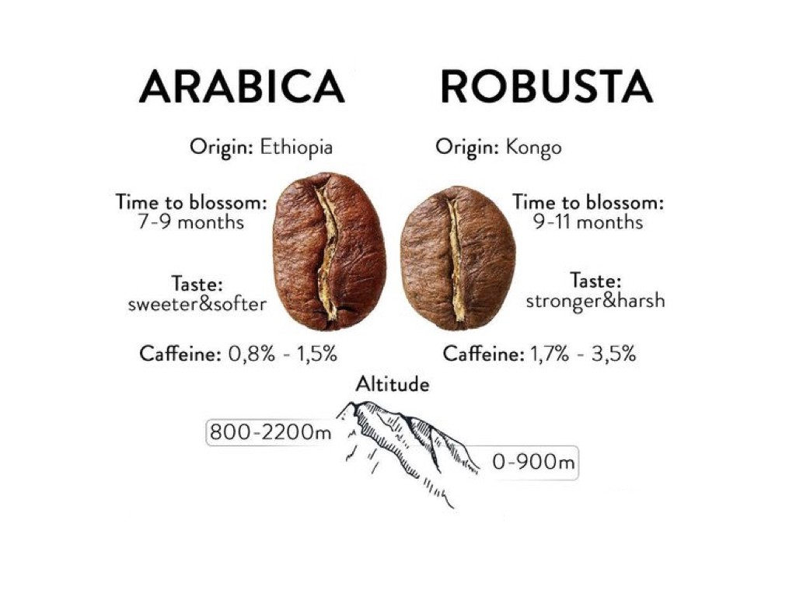
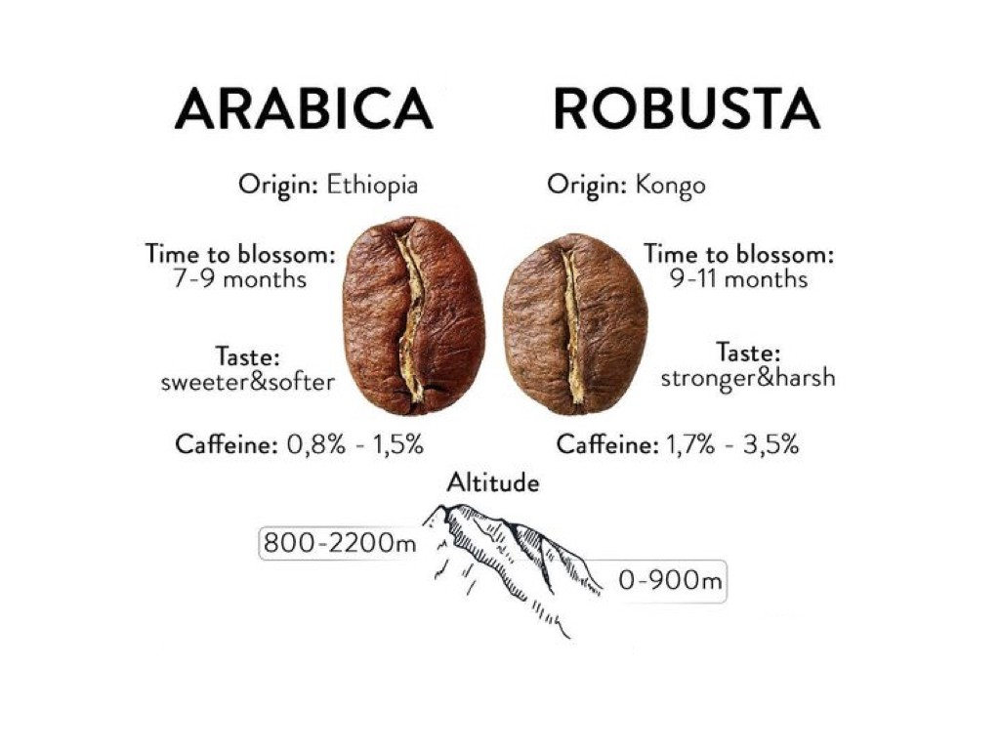
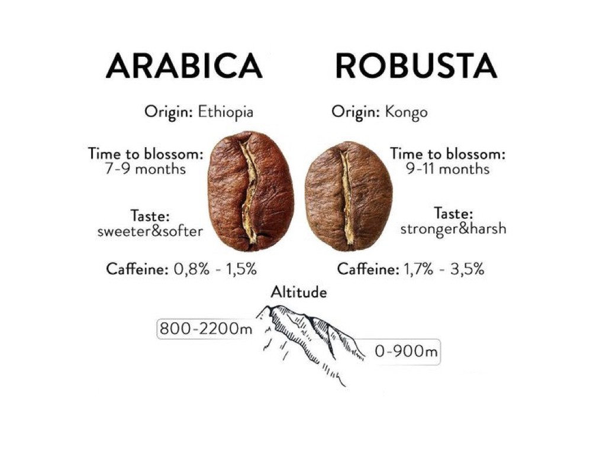

The name Arabica likely comes from the beans' popularity in 7-th centure Arabia(present-day Yemen).
Arabica coffee has a mild and sweet taste with tones of sugar, fruit and berries. Well-known Italian coffee grower Ernesto Illy wrote in the issue of Scientific American:
"Arabica is a medium-to low-wielding, rather delicate tree from five to six meters tall that requires a temperate climate and considerable growing care. Commercially grown coffee bushes are pruned to a height of 1.5 to 2 meters. Coffee made from arabica beans has an intense, intricate aroma that can be reminiscent of flowers, fruit, honey, chocolate, caramel or toasted bread. Its caffeine content never exceeds 1.5 percent by weight. Because of its superior quality and taste, arabica sells for a higher price than its hardy, rougher cousin"
 

Robusta Coffee Beans
Coffea Saniphora
